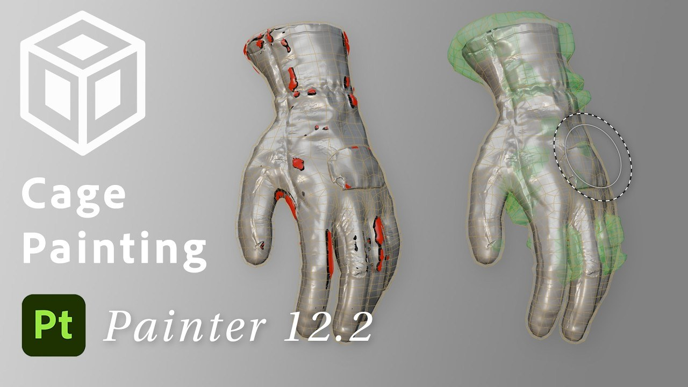

01
Substance 3D Painter 12.2：直接在模型上修補烘焙 Cage 與多邊形選取
Adobe 發布 Substance 3D Painter 12.2，新增以筆刷、橡皮擦和多邊形填色直接調整烘焙 Cage 的流程，並擴充 Polygon Fill 選取、混合模式及透明材質顯示。

Substance ★★★★☆
完整分析
技術流程
當高模局部超出自動產生的烘焙 Cage 時，使用者不必只調整全域距離，而能在網格上用筆刷、橡皮擦或多邊形填色，局部把 Cage 修到貼合模型。
製作影響
Polygon Fill 新增完整四邊面 Loop 一鍵填滿與拖曳矩形區塊的局部 Loop 選取，並支援 Layer Stack 的全部混合模式；預設排除背面多邊形可避免誤填模型後側。
限制與待驗證
材質集清單可在游標停留時於三維視窗標示對應幾何，Viewport 也以順序無關透明度減少透明表面重疊閃爍；來源僅列支援系統，未提供效能成本。
BRIEF｜來源已驗證；證據深度較有限，完整分析會明確區分已知資訊與待驗證事項。